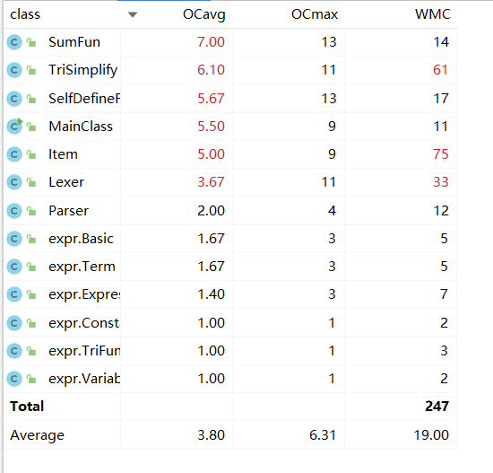
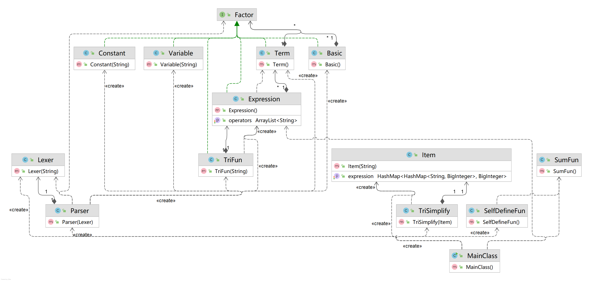

OO第一单元总结
要求
第一次作业总结
分析
我们要做的是对单变量多项式的括号展开，并且化简输出，所以我的思路为分为两步：
- 1. 将输入表达式转化为后缀表达式 （展开括号）
- 2. 将后缀表达式计算并化简为顺序结果 （计算结果）
首先，用递归下降法解析输入，将输入的表达式进行化简和拆解，得到一个不含括号的后缀表达式字符串。接着再按照多项式运算规则进行运算并合并同类项，最后结果进行排序，最后输出结果。
基本思路
我的代码分为了两大部分，分别实现两种相互独立的功能，并用main函数实现连接
1.递归下降法求后缀表达式首先对表达式进行预处理
去除所有空白字符
若第一项为符号，则在表达式开头补 0
在表达式中连续的
+/-号，整合成一个+/-号在表达式中
**后面紧跟着的+号，删除之
通过利用形式化表述定义，将表达式分成了四个层次：因子（常量或变量）、基本项（幂）、项（乘除）、表达式（加减），这四种结构对应了四种对象。我们下面分别进行讨论对这些对象的解析：
- 对于因子（常量或变量）的解析：若下一个字符为单目运算符或者是数字或者是变量 x ，则不断看下一个字符是否是数字。如果不是数字，那么说明下一个符号不属于因子，即对因子的解析结束。
- 对基本项（幂）的解析：基本项由因子的幂次方组成，即为
[加减] 因子 ** 带符号整数。当解析到一个因子后，若下一个解析到的为**，那么读入这个符号并做处理，然后下一个符号一定是一个带符号整数，否则，说明基本项的解析结束了。
- 对项（乘除）的解析：项由基本项或因子和乘除符号组成，即为
[加减] 因子 | 项 * 因子，处理方法与基本项相似。
对表达式（加减）的解析：表达式由项和加减符号组成，即为：
[加减] 项 | 表达式 加减 项通过题目所给的形式化表述可以表叫容易地建立层次，并且通过方法的互相调用完成解析。递归下降方法的好处在于，它可以通过方法之间的间接递归调用，非常自然地处理嵌套的表达式（即带嵌套括号的表达式）。
2.后缀表达式计算第1步中所得的后缀表达式中，运算符为
+/-/*/**，操作数为带符号整数 / 变量x。把所有操作数和运算结果视为一系列单项式之和（多项式）
则：
- 对于
带符号整数，视为指数为零，系数为带符号整数的值的单项式
- 对于
变量x，视为指数和系数均为 1 的单项式
- 对于
由于后缀表达式的便利性，因此我们每读到一个运算符，就对最近的两个多项式进行对应运算并返回一个多项式即可
具体实现
读取处理类
Lexer
- 该类主要目的是对原始表达式进行读取处理，使其按照需要每次使用都能输出一个
操作数/运算符 - 对字符串进行必要的预处理
- 读取数字需要判断正负（即该数前面的
+/-号（如果有）是否是单目运算符）
- 该类主要目的是对原始表达式进行读取处理，使其按照需要每次使用都能输出一个
解析类
Parser- 使用递归下降法处理表达式，递归地分别对表达式（Expression）、项（Term）、基本项（Basic）、因子（Factor）进行处理
- 若是识别到左括号
(则递归调用parseExpression()先处理括号内的内容即可
多项式类
Item- 对于多项式的
+/-/*/**操作均在该类中使用公开函数实现，需要时根据运算符类型调用即可 - 重写
toString方法，对保存在该类的各单项式对指数项进行排列后输出
- 对于多项式的
因子类接口
Factor


基于度量的程序结构分析
总UML类图
代码规模分析
方法复杂度分析
类复杂度分析
优化小方法：
- 把
x**2用x*x替换 - 把多项式的首个非负项放在表达式首位显示
第二次作业总结
分析
本次作业是在第一次作业的基础之上对多项式的括号展开，并且化简输出，相比于第一次作业，本次作业新增了三种函数，以及拓展了一些数据显示或者实现上的细节。因此，在第一次作业的基础上，进行迭代开发，将新增要求一一实现即可。
需求变更
新增内容:
三角函数：
- 三角函数 $\rightarrow$ ‘sin’ 空白项 ‘(‘ 空白项 因子 空白项 ‘)’ [空白项 指数] | ‘cos’ 空白项 ‘(‘ 空白项 因子 空白项 ‘)’ [空白项 指数]
自定义函数
- 自定义函数定义 $\rightarrow$ 自定义函数名 ‘(‘ 空白项 函数自变量 空白项 [‘,’ 空白项 函数自变量 空白项 [‘,’ 空白项 函数自变量 空白项]] ‘)’ 空白项 ‘=’ 空白项 函数表达式
- 函数自变量 $\rightarrow$ ‘x’ | ‘y’ | ‘z’
- 自定义函数调用 $\rightarrow$ 自定义函数名 空白项 ‘(‘ 空白项 因子 空白项 [‘,’ 空白项 因子 空白项 [‘,’ 空白项 因子 空白项]] ‘)’
- 自定义函数名 $\rightarrow$ ‘f’ | ‘g’ | ‘h’
求和函数
- 求和函数 $\rightarrow$ ‘sum’ ‘(‘ 空白项 i 空白项’,’ 空白项 常数因子 空白项 ‘,’ 空白项 常数因子 空白项 ‘,’ 空白项 求和表达式 空白项 ‘)’
数据限制变更:
指数变更：
- 指数输入、计算过程中和最终计算结果最高次为 8 $\rightarrow$ 指数输入最高次为 8 且 互测对指数无要求 （已于第一次作业开发完成）
括号嵌套：
- 本次作业可能会存在多层括号嵌套 （已于第一次作业开发完成）
迭代开发
新增：
求和函数类
SumFun
- 该类带有一个处理方法，用于字符串的预处理，将输入字符串中所有的 sum 函数展开，返回处理后的字符串
- 如：
sum(i, 1, 3, (i*x))处理为((1*x)+(2*x)+(3*x)) - tips: 直接
replaceAll的小心"sin"里面也有个"i" - tips:
sum的上下限需要用BigInter
自定义函数类
SelfDefineFun
- 该类的
addFun方法读入一个自定义函数表达式，以HashMap<String, ArrayList<String>>的形式保存于该类中 - 如：
f(x,y,z)=x+y**2+z**3存储为HashMap<f,[x, y, z, (x+y**2+z**3)]> - 该类亦带有一个处理方法，同样用于字符串的预处理，将本类中所存的所有自定义函数都代入输入字符串中，并返回处理后的字符串
- 如：
自定义函数为：f(x,y,z)=x+y**2+z**3 ; 待处理表达式为：f(sin(x)**2,cos(x),x) ;处理为((sin(x)**2)+(cos(x))**2+(x)**3) - tips: 需要先替换
x以免出现x的重复代入
- 该类的
三角函数类
TriFun
- 该类在递归下降算法中位于
Experssion类之上，具有addExpression方法用于递归 - 使用一个字符串用于记录三角函数具体类型（
sin/cos） - 重写
toString方法，把保存在该类中存储的表达式并输出三角函数类型（视为单目运算符）
- 该类在递归下降算法中位于
三角函数化简类
TriSimplify
- 该类用于将一个
Item类中符合三角函数化简规则的项进行运算并化简，返回一个处理后的Item类
- 该类用于将一个
修改：
读取处理类
Lexer- 增加
sin和cos识别 - 变更识别变量
x为识别所有自变量、
- 增加
解析类
Parser- 递归下降算法输出后缀表达式时加入三角函数类，输出时将三角函数视为单目运算符（即增加
parseTriFun方法） - 变更识别变量
x为识别所有自变量
- 递归下降算法输出后缀表达式时加入三角函数类，输出时将三角函数视为单目运算符（即增加
多项式类
Item- 需要重构： 该类在第一次作业中只涉及变量
x的计算，在本次作业中要涉及多变量计算（把三角函数作用于表达式后的整体视作一个自变量（原因：无法与x合并，具有自己独立的系数和指数） ） - 将多项式以
HashMap<HashMap<String, BigInteger>, BigInteger>的形式保存于该类中 - 如：
5*x*sin(x**2)**2保存为HashMap<HashMap(<x,1> & <sin(x**2),2>),5> - 根据新类型重构
add/sub/mul/pow (+/-/*/**)方法 - 新增
sin/cos方法，作用为把表达式用sin()/cos()包裹并定义为新自变量
- 需要重构： 该类在第一次作业中只涉及变量
基于度量的程序结构分析
总UML类图
代码规模分析
方法复杂度分析
类复杂度分析

优化小方法：
- 若
<因子>的长度为1, 则把<因子>**2用<因子>*<因子>替换。（Warning:若是三角函数中 "<因子>**2" 则不能应用此变换，原因为不符合本次作业中的形式化表述） - 把多项式的首个非负项放在表达式首位显示
- 三角函数恒等变形（变形需要能使表达式长度缩减）
项*sin(<因子>)**2 + 项*cos(<因子>)**2$\rightarrow$项sin(0)$\rightarrow$0，cos(0)$\rightarrow$1sin(-<因子>)$\rightarrow$-sin(<因子>),cos(-<因子>)$\rightarrow$cos(<因子>)a + b*sin/cos(<因子>)**2$\rightarrow$(a+b) - b*cos/sin(<因子>)**22 * sin(<常数因子>) * cos(<常数因子>)$\rightarrow$sin(<常数因子> * 2)
第三次作业总结
分析
本次作业是在第一次作业和 第二次作业的基础之上新增了一些琐碎的小功能，算是比较小的一次迭代（甚至如果你前几次扩展性写得好可以认为甚至不是一次迭代）
需求变更
新增内容:
- 无
数据限制变更:
三角因子嵌套：
- 支持因子嵌套在三角函数里面，并整体作为一个因子
函数嵌套
- 支持函数当做因子使用，并随意嵌套
数据量增加：
- 互测数据限制：
Cost <= 1000$\rightarrow$Cost <= 100000, 允许出现求和函数
- 互测数据限制：
迭代开发
新增类：
- 无
修改类：
基于度量的程序结构分析
总UML类图
代码规模分析
方法复杂度分析

类复杂度分析
优化小方法：
- 若
<因子>的长度为1, 则把<因子>**2用<因子>*<因子>替换。 - 把多项式的首个非负项放在表达式首位显示
- 三角函数恒等变形（变形需要能使表达式长度缩减）
项*sin(<因子>)**2 + 项*cos(<因子>)**2$\rightarrow$项sin(0)$\rightarrow$0，cos(0)$\rightarrow$1sin(-<因子>)$\rightarrow$-sin(<因子>),cos(-<因子>)$\rightarrow$cos(<因子>)a + b*sin/cos(<因子>)**2$\rightarrow$(a+b) - b*cos/sin(<因子>)**22 * sin(<常数因子>) * cos(<常数因子>)$\rightarrow$sin(<常数因子> * 2)
分析自己程序的bug
本人三次作业强测及互测结果如图：
第一次作业：
第二次作业：
第三次作业：
总共找出的
bug数：1个分别为：
- 出错数据：
sin((sin(x)*x)) - 错误答案：
sin(sin(x)*x) - 正确答案：
sin((sin(x)*x)) - 出错原因：
计算时三角函数判定内部是否为表达式的方法 IsTerm() 判定条件错误
- 出错数据：
分析自己发现别人程序bug所采用的策略
根据形式化表述撰写
python程序生成覆盖性测试数据对他人程序随机生成数据来进行黑盒测试测试有效性： 较佳，互测基本能覆盖所有人被找出的bug
是否结合被测程序的代码设计结构来设计测试用例： 否
心得体会
本单元是表达式括号展开的从简到难的三次迭代过程，在这次作业中我的面向对象思维方法得以初步的建立：第一单元我掌握了 gitlab 的使用，熟悉了代码风格的检查，重视和逐步掌握了测试方法和技巧；第二单元我掌握了迭代设计，增量开发，意识到一个好的架构设计的重要性；第三单元使我掌握和应用继承、接口和多态机制，以统一的架构来整合了三次作业的功能，并且强化了我基于黑盒测试来定位程序bug的能力。三次作业均强调了鲁棒性设计和层次化设计，规范了我的代码书写风格，让我认识了 "坚持美观，灵活对待，符合编程的一般原则" 的广义代码风格，使我受益匪浅。
by Tan